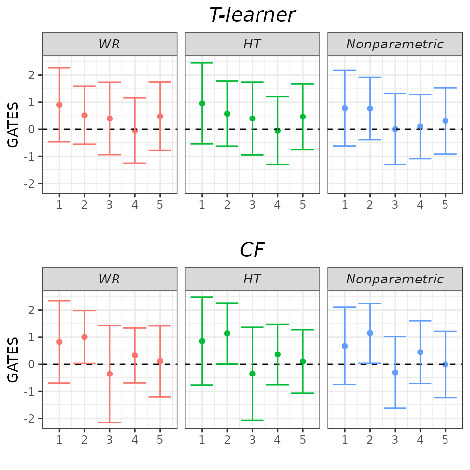
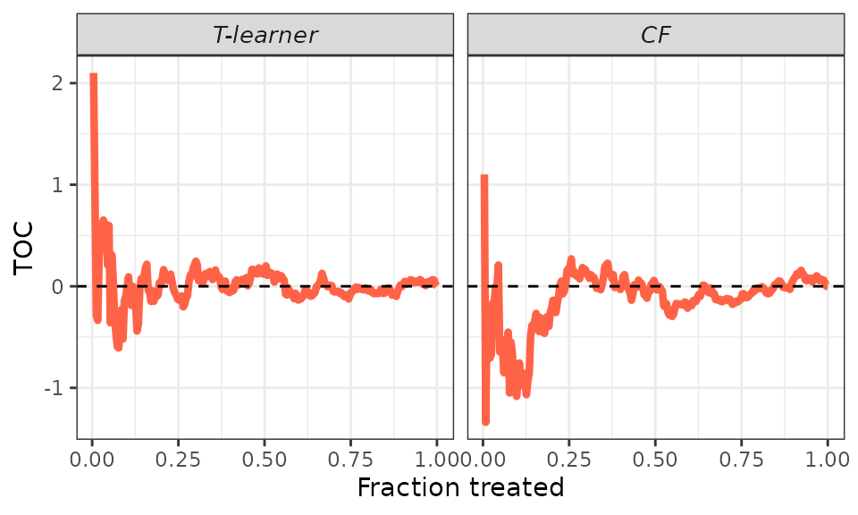

Short Tutorial
evaluCATE-short-tutorial.RmdIn this tutorial, we show how to use the evaluCATE
package to evaluate your conditional average treatment effect (CATE)
predictions. Before diving in the technical details, we need to define
notation:
- \(Y_i\) → Observed outcome;
- \(D_i \in \{ 0, 1\}\) → Treatment indicator;
- \(X_i\) → Covariate vector;
- \(\mu ( X_i ) := \mathbb{E} [ Y_i | X_i ]\) → Conditional mean of \(Y_i\) given \(X_i\);
- \(\mu (d, X_i ) := \mathbb{E} [ Y_i | X_i, D_i = d ]\) → Conditional mean of \(Y_i\) given \(X_i\) for subgroup \(D_i = d\);
- \(p ( X_i ) := \mathbb{P} [ D_i = 1 | X_i ]\) → Propensity score;
- \(w ( X_i ) := \frac{1}{p ( X_i ) [ 1 - p ( X_i )]}\) → Propensity score weights;
- \(H_i := w ( X_i ) [ D_i - p (X_i) ]\) → Horvitz-Thompson operator;
- \(\Gamma_i := \mu_1 ( X_i ) - \mu_0 ( X_i ) + \frac{D_i [ Y_i - \mu_1 ( X_i ) ]}{p ( X_i )} - \frac{[ 1 - D_i ] [ Y_i - \mu_0 ( X_i ) ]}{1 - p ( X_i )}\) → Doubly-robust (or AIPW) score;
- \(\tau := \mathbb{E} [ Y_i ( 1 ) - Y_i ( 0 ) ]\) → Average treatment effect (ATE);
- \(\tau ( X_i ) := \mathbb{E} [ Y_i ( 1 ) - Y_i ( 0 ) | X_i ]\) → CATE.
Throughout the rest of the tutorial, we assume SUTVA and unconfoundedness (e.g., Imbens and Rubin, 2015).
Motivating Example
We illustrate the usage of the evaluCATE package with
simulated data:
\(X_{i} \sim \mathcal{U} ( 0, 1 )\) single uniformly distributed covariate;
\(D_i \sim Bernoulli(1/2)\) randomly assigned treatment;
\(Y_i = X_i + 0 \times D_i + \varepsilon_i\) with \(\varepsilon_i \sim \mathcal{N} ( 0, 1 )\);
This implies a homogeneous zero effect, i.e. \(\tau ( X_i ) = 0\).
## Generate data.
set.seed(1986)
n <- 500
k <- 1
X <- matrix(runif(n * k), ncol = k)
colnames(X) <- paste0("x", seq_len(k))
D <- rbinom(n, size = 1, prob = 0.5)
mu0 <- X[, 1]
mu1 <- X[, 1]
Y <- mu0 + D * (mu1 - mu0) + rnorm(n, sd = sqrt(5))To achieve valid inference, we randomly partition our data set into two subsamples:
a training sample for estimating the CATEs, and
a validation sample to evaluate the estimated heterogeneity.
We explore two distinct models for CATE estimation: a T-learner employing honest regression forests as base learners, and an honest causal forest.
## Sample split.
train_idx <- sample(c(TRUE, FALSE), length(Y), replace = TRUE)
X_tr <- matrix(X[train_idx, ])
X_val <- matrix(X[!train_idx, ])
D_tr <- D[train_idx]
D_val <- D[!train_idx]
Y_tr <- Y[train_idx]
Y_val <- Y[!train_idx]
## CATEs estimation.
# T-learner.
forest_treated <- regression_forest(as.matrix(X_tr[D_tr == 1, ]), Y_tr[D_tr == 1])
forest_control <- regression_forest(as.matrix(X_tr[D_tr == 0, ]), Y_tr[D_tr == 0])
cates_val_t <- predict(forest_treated, X_val)$predictions - predict(forest_control, X_val)$predictions
# Causal forest.
forest <- causal_forest(X_tr, Y_tr, D_tr)
cates_val_cf <- predict(forest, X_val)$predictions Let’s display the distribution of the out-of-sample CATE predictions. Observing the histograms below, one might infer the presence of heterogeneity in the treatment effects. However, substantial variation in predictions does not definitively indicate heterogeneous effects, as this variation may be attributed to estimation noise messing with our results (precisely what is occurring in our example!).
These complexities arise because the application of machine learning
tools to estimate heterogeneous treatment effects may produce
low-quality CATE estimates (see, e.g., the figure below, where we
compare true and estimated CATEs). It is therefore crucial to employ
appropriate procedures to evaluate the quality of the estimated CATEs
and assess whether systematic heterogeneity is detected. This is the
purpose of the evaluCATE package.
## Out-of-sample predicted CATEs.
p1 <- data.frame("cates" = cates_val_t, "estimator" = "T-learner") %>%
bind_rows(data.frame("cates" = cates_val_cf, "estimator" = "CF")) %>%
ggplot(aes(x = cates)) +
geom_histogram(color = "black", fill = "dodgerblue", alpha = 0.4, bins = 10) +
facet_grid(cols = vars(factor(estimator, levels = c("T-learner", "CF")))) +
xlab("Estimated CATEs") + ylab("Density") +
theme_bw() +
theme(plot.title = element_text(hjust = 0.5), legend.position = "none")
## True and estimated CATEs.
p2 <- data.frame("x1" = X_val, "true_cates" = mu1[!train_idx] - mu0[!train_idx], "cates_t" = cates_val_t, "cates_cf" = cates_val_cf) %>%
melt(id.vars = "x1") %>%
ggplot(aes(x = x1, y = value, group = variable, color = variable)) +
geom_line(linewidth = 1) +
scale_color_manual(name = "", labels = c("True", "T-learner", "CF"), values = c("tomato", "dodgerblue", "pink4")) +
xlab("X1") + ylab("CATEs") +
theme_bw() +
theme(plot.title = element_text(hjust = 0.5), legend.position = c(0.40, 0.18), legend.text = element_text(size = 8), legend.key.size = unit(0.4, 'cm'))
## Grid.
grid.arrange(p1, p2, ncol = 2)
Quality Evaluation
The evaluation of estimated CATEs focuses on three key targets:
- Best Linear Predictor (BLP) of the actual CATEs using the estimated CATEs;
- Sorted Group Average Treatment Effects (GATES);
- Rank-Weighted Average Treatment Effects (RATEs) induced by the estimated CATEs.
This section offers an overview of these targets. The discussion is loosely based on Chernozhukov et al. (2017), Yadlowsky et al. (2021), and Imai and Li (2022).1
Keep in mind that achieving valid inference necessitates a training-validation sample split, akin to that performed in the Motivating Example. Then, for any fixed \(\hat{\tau} ( \cdot )\) obtained using only the training sample, our targets of interest are estimated using observations solely from the validation sample.
Best Linear Predictor
The BLP of the actual CATEs using the estimated CATEs is defined as follows:
\[ BLP [\tau ( X_i ) | \hat{\tau} ( X_i )] := \beta_1 + \beta_2 [ \hat{\tau} ( X_i ) - \mathbb{E} [ \hat{\tau} ( X_i ) ] ]\]
with \(\beta_1 = \mathbb{E} [ \tau ( X_i ) ]\) and \(\beta_2 = Cov [ \tau ( X_i ), \hat{\tau} ( X_i ) ] / Var [ \hat{\tau} ( X_i ) ] = \mathbb{E} \left[ \frac{\hat{\tau} ( X_i ) - \mathbb{E} [\hat{\tau} ( X_i ) ]}{Var [ \hat{\tau} ( X_i ) ]} \tau ( X_i ) \right]\).
Our primary focus is on \(\beta_2\). Notice that \(\beta_2 = 0\) if either a) the effects are homogeneous or b) our CATE estimates are unreliable. Therefore, rejecting the hypothesis \(\beta_2 = 0\) would suggest both heterogeneous effects and reliable CATE estimates.2 As a byproduct, \(\beta_1\) identifies the ATE.
The evaluCATE package estimates the BLP using three
distinct strategies, each entailing the fitting of an appropriate
regression model.3 4
- Weighted Residuals:
\[ Y_i = \beta_1 [ D_i - p ( X_i ) ] + \beta_2 \{ [ D_i - p ( X_i ) ] [ \hat{\tau} ( X_i ) - \mathbb{E}_n [ \hat{\tau} ( X_i ) ] ] \} + \epsilon_i \] with the model fitted via WLS using weights \(w ( X_i)\) and \(\mathbb{E}_n\) denoting the sample average operator.
- Horvitz-Thompson
\[ H_i Y_i = \beta_1 + \beta_2 \{ \hat{\tau} ( X_i ) - \mathbb{E}_{n, V} [ \hat{\tau} ( X_i ) ] \} + \epsilon_i \] with the model fitted via OLS.
- AIPW
\[ \hat{\Gamma}_i = \beta_1 + \beta_2 \{ \hat{\tau} ( X_i ) - \mathbb{E}_{n, V} [ \hat{\tau} ( X_i ) ] \} + \epsilon_i \] with the model fitted via OLS and the doubly-robust scores \(\Gamma_i\) estimated via cross-fitting in the validation sample.
Sorted Group Average Treatment Effects
The GATES are defined as follows:
\[ \gamma_k := \mathbb{E} [ \tau ( X_i ) | \hat{\ell}_{k - 1} \leq \hat{\tau} ( X_i ) < \hat{\ell}_k ], \,\,\, k = 1, \dots, K\]
with the groups formed by cutting the distribution of \(\hat{\tau} ( \cdot )\) into \(K\) bins using the empirical quantiles of \(\hat{\tau} ( \cdot )\) \(\{ \hat{\ell}_k \}_{k = 1}^K\).
Our main objective is to test specific hypotheses regarding the GATES, enabling us to determine whether we detect systematic heterogeneity or merely estimation noise. For example, we can examine whether all GATES are equal (\(\gamma_1 = \gamma_2 = \dots = \gamma_K\)) or if the difference between the largest and smallest GATES is zero (\(\gamma_K = \gamma_1\)).5 As a byproduct, the GATES quantify the degree to which effects vary across groups, thus offering an immediate visualization of the estimated heterogeneity *although disparities in the point estimates can emerge merely due to estimation noise).
The evaluCATE package estimates the GATES using four
different strategies, three of which involve fitting an appropriate
regression model, while the fourth relies on a nonparametric approach.6 7
Weighted Residuals
\[ Y_i = \sum_{k = 1}^K \gamma_k [ D_i - p ( X_i ) ] \mathbb{1} ( \hat{\ell}_{k - 1} \leq \hat{\tau} ( X_i ) < \hat{\ell}_k ) + \epsilon_i \]
with the model fitted via WLS using weights \(w ( X_i)\).
Horvitz-Thompson
\[ H_i Y_i = \sum_{k = 1}^K \gamma_k \mathbb{1} ( \hat{\ell}_{k - 1} \leq \hat{\tau} ( X_i ) < \hat{\ell}_k ) + \epsilon_i \]
with the model fitted via OLS.
AIPW
\[ \hat{\Gamma}_i = \sum_{k = 1}^K \gamma_k \mathbb{1} ( \hat{\ell}_{k - 1} \leq \hat{\tau} ( X_i ) < \hat{\ell}_k ) + \epsilon_i \]
with the model fitted via OLS and the doubly-robust scores \(\Gamma_i\) estimated via cross-fitting in the validation sample.
Nonparametric
\[ \hat{\gamma}_k = \frac{K}{\sum_{i = 1}^n D_i} \sum_{i = 1}^n Y_i D_i \mathbb{1} ( \hat{\ell}_{k - 1} \leq \hat{\tau} ( X_i ) < \hat{\ell}_k ) - \frac{K}{\sum_{i = 1}^n [ 1 - D_i ]} \sum_{i = 1}^n Y_i [ 1 - D_i ] \mathbb{1} ( \hat{\ell}_{k - 1} \leq \hat{\tau} ( X_i ) < \hat{\ell}_k ) \]
Rank-Weighted Average Treatment Effects
The RATE induced by the estimated CATEs is defined as follows:
\[ \theta_{\alpha} ( \hat{\tau} ) := \int_0^1 \alpha ( u ) TOC ( u; \hat{\tau} ) d u \] where:
\[ TOC (u; \hat{\tau}) := \mathbb{E} [ Y_i ( 1 ) - Y_i ( 0 ) \mid F ( \hat{\tau} ( X_i )) \geq 1 - u ] - \mathbb{E} [ Y_i ( 1 ) - Y_i ( 0 ) ] \] with \(F ( \cdot )\) the cumulative distribution function of \(\hat{\tau} ( \cdot )\), \(0 < u \leq 1\), and \(\alpha : ( 0, 1 ] \rightarrow \mathcal{R}\) a generic weight function.
The RATE offers a measure of how effectively our estimated CATEs prioritize units for treatment in terms of intervention benefit. The concept involves considering \(\hat{\tau} ( \cdot )\) as a “prioritization rule” that arranges units \(i = 1, ..., n\) in order \(j = 1, ..., n\) based on their estimated CATEs, such as by giving priority to units with the largest estimated CATEs.8 9
Our primary focus is to test the hypothesis \(\theta_{\alpha} ( \hat{\tau} ) = 0\), which holds true if either a) the effects are homogeneous or b) our CATE estimates are unreliable. Thus, rejecting the hypothesis \(\theta_{\alpha} ( \hat{\tau} ) = 0\) would indicate both heterogeneous effects and reliable CATE estimates.10
The evaluCATE package estimates the TOCs and the RATE
using the following sample-averaging estimators:
\[ \widehat{TOC} ( u; \hat{\tau} ) = \frac{1}{ \lfloor u n \rfloor } \sum_{j = 1}^{\lfloor u n \rfloor} \hat{\Gamma}_{i ( j )} - \frac{1}{n} \sum_{i = 1}^n \hat{\Gamma}_i \] \[ \hat{\theta}_{\alpha} ( \hat{\tau} ) = \frac{1}{n} \sum_{j = 1}^n \alpha \left( \frac{j}{n} \right) \widehat{TOC} \left( \frac{j}{n}; \hat{\tau} \right) \] where we let \(i ( j )\) be the mapping from rank \(j\) to unit \(i\) (e.g., \(i ( 1 )\) returns the most-prioritized unit, and \(i ( n )\) returns the least-prioritized unit) and the doubly-robust scores \(\Gamma_i\) are estimated via cross-fitting in the validation sample.
The evaluCATE package considers two distinct weighting
functions, each corresponding to a different RATE:
- \(\alpha ( u ) = 1\) → Area under the TOC curve (AUTOC)
- \(\alpha ( u ) = u\) → Qini coefficient (QINI)
The half-sample bootstrap procedure is employed to estimate the standard error of \(\hat{\theta}_{\alpha} ( \cdot )\).
Code
Calling the Main Function
To estimate the BLP, GATES, and RATEs, we use the
evaluCATE function. When calling this function, we must
provide our sample using the first six arguments: Y_tr and
Y_val for the observed outcomes, D_tr and
D_val for the treatment assignment, and X_tr
and X_val for the covariates of units in the training and
validation subsamples. Furthermore, it is necessary to supply our CATE
predictions on the validation sample using the cates_val
argument. This argument should consist of a named list, with each
element storing a vector of CATE predictions produced by a specific
model. We can choose our preferred names for the elements, keeping in
mind that these names will be used to display and plot the results. We
have already defined most of the arguments mentioned in this paragraph
in our Motivating Example above. Below, we construct the
cates_val list that stores the out-of-sample predictions
produced by the T-learner and the causal forest.
The evaluCATE function can implement all the BLP and
GATES estimation strategies outlined in the Quality Evaluation section.
Users can choose their preferred strategies by controlling the
strategies argument. However, this choice has no impact on
RATEs estimation, which are always estimated using the sample-averaging
estimators discussed above. Furthermore, the nonparametric strategy for
GATES estimation is always implemented. Below, we opt to implement only
the weighted residuals and the horvitz-thompson strategies.
Users can choose to include the additional constructed covariates
discussed in footnotes 4 and 7 by controlling the denoising
argument. However, this choice does not impact RATEs estimation or the
results from the nonparametric GATES estimation strategy. Below, we
decide not to include any constructed covariate.
Specific nuisance functions are necessary to conduct the analysis
outlined in the Quality Evaluation section. Users can provide
predictions on the validation sample of \(p (
\cdot )\), \(\mu ( \cdot )\),
\(\mu_0 ( \cdot )\), and \(\mu_1 ( \cdot )\) using the optional
arguments pscore_val, mu_val,
mu0_val, and mu1_val, respectively. It is
important to note that these predictions must be generated by models
estimated using only the training sample. If not supplied by the user,
these functions are internally estimated via honest regression forests
using only the training sample. In our Motivating Example, we know the
actual propensity score, which is constant at \(0.5\) for all units.11 We provide these
values in the call below and allow the function to internally estimate
the other nuisances.
Finally, we have four additional optional arguments.
n_groups controls the number of groups formed for the GATES
analysis. beneficial specifies how to rank units for the
RATE estimation (according to either increasing or decreasing values of
the estimated CATEs). n_boot determines the number of
bootstrap replications used to estimate the standard error of the
estimated RATEs. verbose controls whether the
evaluCATE function should print progress status on the
console. Below, we use the default settings of 5 groups, where the
treatment is considered beneficial, and 200 bootstrap replications. We
prevent the function from printing progress updates.
## Define arguments.
cates_val <- list("T-learner" = cates_val_t,
"CF" = cates_val_cf)
strategies <- c("WR", "HT")
denoising <- "none"
pscore_val <- rep(0.5, length(Y_val)) # True propensity scores.
## Call main function.
evaluation <- evaluCATE(Y_tr, Y_val, D_tr, D_val, X_tr, X_val, cates_val, strategies = strategies, denoising = denoising, pscore_val = pscore_val, verbose = FALSE)Results
The summary method enables us to visualize the results
of the BLP estimation when we set the target argument to
BLP. The latex argument determines whether the raw results
or LATEX code for a table will be displayed in the console.
Additionally, we can use the which_models argument to
select which results to display, which is useful to avoid a lengthy
output. Since we have estimated a small number of models, we opt for the
default option and display all results.
We consistently fail to reject the hypothesis \(\beta_2 = 0\), suggesting that either the effects are homogeneous or our CATE estimates are unreliable (both are true in our Motivating Example). Given our knowledge of the DGP, the results indicate that both models produce unreliable estimates, with the causal forest estimator performing somewhat better (although we cannot (yet) formally test whether \(\beta_2^{CF} > \beta_2^{T}\)). Overall, the BLP analysis suggests that the heterogeneity implied by the distribution of the estimated CATEs might be merely estimation noise.
## BLP summary.
summary(evaluation, target = "BLP") # Try 'latex = TRUE'.
#>
#> ── BLP RESULTS ─────────────────────────────────────────────────────────────────
#>
#> ── T-learner ──
#>
#> MODEL | ATE | HET
#> ----------------- | --------------- | --------------- |
#> wr_none | 0.25 | -0.53 |
#> | [-0.313, 0.809] | [-1.825, 0.765] |
#> ht_none | 0.25 | -0.53 |
#> | [-0.313, 0.809] | [-1.825, 0.765] |
#> ── CF ──
#> MODEL | ATE | HET
#> ----------------- | --------------- | --------------- |
#> wr_none | 0.25 | 0.09 |
#> | [-0.314, 0.810] | [-4.468, 4.657] |
#> ht_none | 0.25 | 0.09 |
#> | [-0.314, 0.810] | [-4.468, 4.657] |
#> ────────────────────────────────────────────────────────────────────────────────We can call the summary method with the
target argument set to GATES to visualize the results of
the GATES estimation, with the other arguments functioning as before. To
facilitate the digestion of GATES point estimates and confidence
intervals, we can call the plot method and set the
target argument to GATES. Similarly to the
summary method, we could utilize the
which_models argument to select which results to display,
although it is not necessary in this context.
All GATES confidence intervals encompass zero, indicating that no group is affected by the treatment (true in our Motivating Example!). The estimated \(p\)-values for testing the hypotheses that all GATES are equal and that the most and least affected groups exhibit the same response to treatment are large, resulting in a failure to reject these hypotheses. This GATES analysis offers additional evidence that the effects are not heterogeneous.
## GATES summary.
summary(evaluation, target = "GATES") # Try 'latex = TRUE'.
#>
#> ── HYPOTHESIS TESTING RESULTS (p-values) ───────────────────────────────────────
#>
#> ── T-learner ──
#>
#> MODEL | GATES_1 = GATES_2 = ... = GATES_K | GATES_K = GATES_1
#> ----------------- | --------------------------------------------- | ----------------------------- |
#> wr_none | 0.823 | 0.372 |
#> ht_none | 0.823 | 0.372 |
#> imai_li | 0.977 | NA |
#> ── CF ──
#> MODEL | GATES_1 = GATES_2 = ... = GATES_K | GATES_K = GATES_1
#> ----------------- | --------------------------------------------- | ----------------------------- |
#> wr_none | 0.915 | 0.983 |
#> ht_none | 0.915 | 0.983 |
#> imai_li | 0.890 | NA |
#> ────────────────────────────────────────────────────────────────────────────────
plot(evaluation, target = "GATES")
Lastly, calling the summary method with the
target argument set to RATE enables us to visualize the
results of the RATE estimation. To plot the estimated TOC curve, we can
call the plot method and set the target
argument to TOC. The AUTOC coefficient corresponds to the area under the
TOC curve, while the QINI coefficient corresponds to the area under the
curve \(u \times TOC (u;
\hat{\tau})\).
Overall, the results align with those of the BLP analysis. We consistently fail to reject the hypothesis \(\theta_{\alpha} ( \hat{\tau} ) = 0\), suggesting that either the effects are homogeneous or our CATE estimates are unreliable. Given our knowledge of the DGP, the results indicate that both models produce unreliable estimates, with the causal forest estimator performing somewhat better (although we cannot (yet) formally test whether \(\theta_{\alpha}^{CF} > \theta_{\alpha}^{T}\)).
## RATEs summary.
summary(evaluation, target = "RATE") # Try 'latex = TRUE'.
#>
#> ── RATEs RESULTS ───────────────────────────────────────────────────────────────
#>
#> ── T-learner ──
#>
#> WEIGHT | RATE |
#> ------------------ | ---------------- |
#> autoc | -0.08 |
#> | [-0.623, 0.465] |
#> qini | -0.04 |
#> | [-0.213, 0.141] |
#> ── CF ──
#> WEIGHT | RATE |
#> ------------------ | ---------------- |
#> autoc | 0.30 |
#> | [-0.354, 0.964] |
#> qini | 0.05 |
#> | [-0.134, 0.235] |
plot(evaluation, target = "TOC")
Complete references to these papers are listed in the home page.↩︎
Failing to reject this hypothesis suggests either there is no heterogeneity or our CATE estimates are not reliable. Without further evidence, we cannot disentangle this ambiguity. Check the hypotheses testing vignette for more details.↩︎
The linear regressions are used for estimation purposes. The identification hinges on linear projections defined at the population level, with the linear regressions constituting their sample analogs.↩︎
For each of these alternatives, additional constructed covariates not necessary for identifying the targets can be included in the regressions to reduce estimation variance. Details can be found in the denoising vignette.↩︎
Check the hypotheses testing vignette for details.↩︎
See footnote 3.↩︎
For each of the parametric alternatives, additional constructed covariates not necessary for identifying the targets can be included in the regressions to reduce estimation variance. Details can be found in the denoising vignette.↩︎
If the treatment is harmful, we prioritize units with the lowest estimated CATEs.↩︎
Prioritization rules can be derived from alternatives approaches, such as risk-based rules. However, our focus here is on CATE-based rules, as we intend to utilize the RATEs to evaluate the quality of our estimated CATEs.↩︎
See footnote 2.↩︎
It is important to note that most methodologies implemented here are valid only under randomized experiments, where \(p ( \cdot )\) is known. The only exception is the AIPW strategy, which is valid under unconfoundedness.↩︎